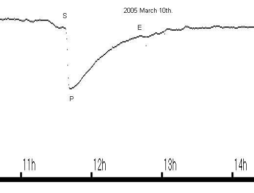
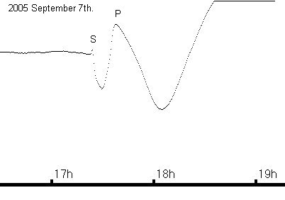
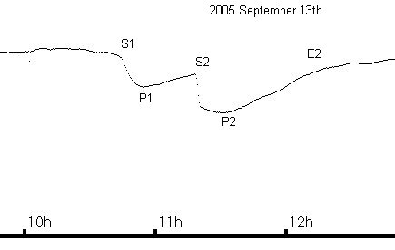

RAG VLF Receiver
Specification:
Tuning range 12kHz..35kHz.
Supply 15v DC at 35mA.
Output 0..5v or 0..2.5v .
Time constant 1 second.
Aerial tuning:
The aerial is tuned with an audio signal generator. Connect the signal generator through a 100k resistor to the aerial, and set it to the required frequency. Monitor the voltage across the aerial with an oscilloscope or AC voltmeter, and adjust the tuning capacitor for maximum voltage. If a maximum cannot be found, then add or remove padding capacitance according to which way the tuning capacitor has stopped. Tuning is complete once the maximum is found within the range of the variable capacitor.
Receiver tuning:
The receiver is best tuned with the aid of an audio signal generator. Adjust the signal generator to the required frequency, and then connect it to the receiver input; no more than a few mV is needed. Connect an oscilloscope or AC voltmeter to pin 14 of IC1. Start by reducing the Q (turn the control anti-clockwise), and then adjust the frequency control to give maximum signal output. With the frequency roughly set, remove the signal generator and turn it off (to avoid interference). Connect the pre-tuned aerial to the receiver input, and again monitor pin 14 of IC1.
A signal should be seen, which can be maximised initially by rotating the aerial towards the transmitter. Small adjustments can be made to the aerial tuning to peak the signal. Returning to the receiver, adjust the frequency controls to the peak the signal before starting to increase the Q. Increase the Q slowly, checking that the frequency is still peaked. If the receiver suddenly bursts into oscillation, then reduce the Q. Make fine adjustments to the aerial and frequency once the Q has been set.
The signal strength will depend on the time of day/night as well as D-layer conditions. With the DC gain set to x1, connect a DC voltmeter to the receiver output. Note that the output has a long time constant, and so several seconds will be required for the voltage to settle after changes are made. The RF gain can be increased, and if necessary the DC gain set to x10 to provide a suitable output in the range 0..5v. The signal must now be monitored for a period to determine the final gain settings required. The day-time output voltage should be within the 0..5v range at the expense of the night-time output, which may well go off-scale.
Monitoring over a period of days should allow any final adjustments to be made. Beware that signals may go off for periods of time, and may indeed not be present when initial tuning is attempted! Try different times of day / night if the signal cannot be found first time. If subsequent attempts to find a signal fail, then try for an alternative signal
Results:
Flares are classified on a rather curious scale, running A, B, C, M and X. It is logarithmic, and is calibrated as follows:
Class Energy
X 10-4..10-3W/m2 (measured at 0.1..0.8nm wavelength)
M 10-5..10-4W/m2
C 10-6..10-5W/m2
B 10-7..10-6W/m2
A 10-8..10-7W/m2
As it is logarithmic, each category can be subdivided into 10, with a resolution of 0.1, leading to a flare being quoted as C5.6 or M1.2. The background level from a 'quiet' sun is often within A or B-class, with most flares being of B or C-class. More energetic active regions produce M or X-class flares. At the extreme, a flare can exceed X9.9, and produce X17 or X20 flares. Flares of X-class pose a threat to orbiting satellites, as well as human space travellers. C-class flares are easily detected as sudden ionospheric disturbances, while some larger B-class events can also be recorded. X-class events produce spectacular SIDs, as the ionosphere slowly recovers from the radiation impact.
When recording SIDs, start, peak and end times are required. 'Start' is the time at which the event is first recorded by the receiver. 'Peak' is the time at which the maximum or minimum signal strength is recorded, and 'End' is the time at which the signal strength returns to its previous diurnal trend. Start and peak times are easily read in most cases, while the end time often requires a little guesswork to identify.
The amplitude of the disturbance usually correlates with the flare class, but will depend on the state of the ionosphere at the time. Since it is an indirect observation of solar activity, the amplitude is not recorded in VLF reports. The length (duration) of the SID recorded does not always correlate with flare class, but can be recorded as the 'importance' of the event on the Earth. This has traditionally been recorded as follows:
Duration Importance
<18min 1-
19..25min 1
26..32min 1+
33..45min 2
46..85min 2+
86..125min 3
>126min 3+
The shape of recorded flares will vary from one observer to another, but a little experience while the sun is active will allow most events to be isolated from other interference. The text-book SID has a sharp rise to a definite peak, followed by a longer recovery period. In practise, many SIDs do not look that simple, and may have multiple peaks. SIDs may also appear inverted, with the peak at a lower signal strength followed by a rising recovery period.. This variation in shape is due to a combination of the path from transmitter to receiver, and the varying state of the ionosphere. The sun often produces multiple flares over a short period, leading to superimposed SIDs that can create confusion.
The following illustrations show some typical events:

This is typical of an ordinary SID. Measurement is fairly easy. It is inverted relative to 'normal', but it is clearly the correct shape.
It would be recorded thus:
2005 March 10th. Start 11:39 Peak 11:42 End 12:42 Importance 2+

This is typical of a much more energetic solar flare, producing a SID that has a double peaked structure. The start and end times can be measured as usual; the peak time should be measured at the maximum point, in this case at 08:37UT.
It would be recorded thus:
2005 September 15th. Start 08:33 Peak 08:37 End 10:33 Importance 3

This is much more difficult, as the flare occurred during the sunset dip in signal strength. The result is a combination of the two effects. The start is easily measured, and the peak is also clear (as above). The end time cannot be measured, and would be left blank.
It would be recorded thus:
2005 September 7th. Start 17:23 Peak 17:38 End ? Importance -

This recording shows 2 flares in rapid succession, such that the SIDs overlap. An end time for the first event cannot be measured.
They would be recorded thus:
2005 September 13th. Start 10:45 Peak 10:55 End ? Importance -
2005 September 13th. Start 11:18 Peak 11:32 End 12:05 Importance 2+
Note that all times are recorded in Universal Time (UT = GMT), to the nearest minute where possible.
Frequencies:
18.3kHz French navy Rosnay, France.
19.6kHz Royal navy, Anthorn UK.
20.27kHz NATO / Italian navy, Isola di Tavolara, Italy.
20.9kHz French navy St. Assise, France.
22.1kHz Royal navy Skelton, UK.
22.6kHz French navy, France.
23.4kHz NATO / Bundesmarine Burlage Germany.
Note that not all transmitters are active all of the time. Some take breaks during the day, while others may be off for periods of weeks or months at a time. If one signal cannot be found, then try for another, or try again at a different time. Also remember that the strength of the signal will depend on the time of day as well as ionospheric conditions. Other frequencies may also be in use from time to time. List correct 2009 February.
References:
www.sec.noaa.gov/today.html GOES satellite data & space weather.
www.iaragroup.org/sole/index.htm Italian VLF group.
Observing the sun, Peter O. Taylor, Cambridge 1991.